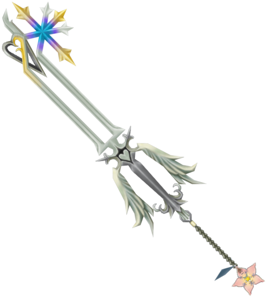

Crabclaw
Características:
The Crabclaw's handle is green and resembles seaweed, while its guard is light blue with a purple mermaid adorning both sides. The shaft of the blade is light blue, thin, and resembles a jet of water. The teeth are comprised of a simple, orange crab with its claws pointing outward. The Keychain token is a light blue seashell. The Crabclaw's name is a clear reference to the crab that make up the weapon's teeth. The Japanese name, "Treasure of Sea", reflects the fact that it is awarded to Sora after sealing Atlantica’s Keyhole.
Diamond Dust
Características:
This Keyblade appears to be made of ice, and both the teeth of the blade and the Keychain's token are snowflakes. It bears some resemblance to the Oathkeeper Keyblade. The chain part of the Keychain is attached to the Keyblade by a gold ring and is made up of gold links, except for the first link, which is shaped like the Ice Titan's head. The Keyblade's name is based on the traditional attack of the Final Fantasy summon, Shiva. When Diamond Dust is swung, it leaves a trail of frozen mist in its wake.
Divine Rose

Características:
The Divine Rose's handguard is designed to look like stained glass. The blade is made of a purple material with a rose design, resembling Beast's rose in the purple glass bell, and the bloom of the rose serves as the blade's teeth. The Keyblade's rainguard is designed to resemble the thorny leaves of a rose bush. The Keychain consists of a slim chain, with the Beast's rose as its token. When an opponent is hit with an attack from the Divine Rose, the symbols that appear are roses. The fifth upgrade gives the Keyblade a powerful, swirling red aura. The Divine Rose's Japanese name is a pun on the phrase "Life in Rose". Although the phrase refers to seeing the world through "rose-colored glasses", in this context it is a reference to the fact that the Beast's life is quite literally within his single rose. The Keyblade's English name is simply a reference to the magical power of the ros
Fairy Harp
Características:
The Fairy Harp's overall color scheme is reminiscent of Peter Pan's clothing. Its handle is dark green and the base of its guard is light green. The rest of the guard is comprised by two sets of wings, one white pair that create the sides of the guard, and one light blue pair above them. These wings are similar to Tinker Bell's. The base of the blade is dark green and the shaft is light green and rounded. The tips of the blade and the teeth are gold and modeled after Peter Pan's pan pipes. The Keychain has silver links and the token is the red feather in Peter Pan's hat.
Jungle King
Características:
The Jungle King appears to be made of wood and other materials from nature. Its handle is orange and surrounded by a circular, tan guard with two spikes near its top. The guard is almost entirely covered by a dark purple material wrapped around it. The shaft is very thin, tan, and long, to the point that the Jungle King is one of the longest Keyblades in Kingdom Hearts. Its teeth are made of five blunt, tan spikes separated by the same dark purple material from the guard. The first link of the Keychain appears to be a silver carabiner, while the rest of the Keychain appears to be a strand of creeper vine. The token resembles a blue butterfly with orange wingtips, the same type of butterfly that covered Deep Jungle's Keyhole.
Keyblade of Heart
Características:
The Keyblade of heart, sometimes referred to as Riku's Keyblade, or Dark Riku's Keyblade, is a Keyblade created by Ansem, Seeker of Darkness from the hearts of the Princesses of Heart, with the exception of Kairi. In addition to being a combat weapon like Sora's Keyblade, this Keyblade has the ability to unlock a person's heart, releasing the darkness within. Its name, if it has one, is currently unknown — it has only been referred to by its type. The Keyblade of heart has a simple design of red and black, akin to the Kingdom Key, with its teeth forming the outline of a heart. It has a rather dark design, despite being created from hearts of pure light. As it lacks Kairi's heart, this Keyblade is incomplete, and has never been seen at full power. It also lacks a Keychain.
Kingdom Key
Características:
The Kingdom Key is depicted as a classic skeleton key approximately 3.5' long, with a long silver Keychain extending from the hilt, and a Hidden Mickey token on the end of the Keychain. In Kingdom Hearts, the token is formed from three spheres, while in other games the token is flat and seemingly cut from sheet metal. The blade and teeth of the Keyblade are silver, the rainguard is blue, and the guard is bright gold. The teeth of the Keyblade form the outline of a crown which matches the crown charm Sora wears.
Kingdom Key D

Características:
The Kingdom Key D is a mirror of the Kingdom Key, and this purpose is reflected in its coloration - where Sora's Keyblade is silver, Mickey's is gold, and vice-versa. Even the rainguard, which is blue on Sora's Kingdom Key, is red on Mickey's, although both Keyblades possess a dark-colored handle.
Lady Luck
Características:
In Kingdom Hearts, Lady Luck's general appearance is based on the four suits of playing cards, hearts, clubs, spades and diamonds. The blade and handle of the Keyblade are made up of a single, purple shaft with a pink highlight. The "crossguard" is made of two clubs facing each other, with a yellow and orange-brown checkered pattern, and the pommel is a diamond with a slightly darker version of the same pattern. The rest of the guard is a purple and red horseshoe shape with curled ends. The blade is tipped with a large, orange heart with a thin, red and yellow border. The teeth of the Keyblade are comprised of a large, red spade with an angled base. The Keychain is silver, and its token is an Ace of Hearts card.
Lionheart
Características:
The Lionheart Keyblade is gunmetal grey, and is designed to resemble Leon's Revolver Gunblade. The blade's teeth and the Keychain's token are both designed after the Griever necklace that Leon wears. This Keychain is in fact present on Leon's own Gunblade. The Lion Heart is Squall's ultimate weapon in Final Fantasy VIII. It, in turn, refers to his last name, Leonhart.
Metal Chocobo
Características:
The blade resembles Cloud's metal Buster Sword, and the Keychain's token is a Chocobo. It possesses a red handle and guard. At the base of the blade, there are two holes, one on top of the other, and there are three holes adjacent to the teeth.
Oathkeeper

Características:
The Oathkeeper's shaft displays two hearts, and its handle bears two angel wings, contrasting the bat wings that comprise Oblivion's handle. The teeth are fashioned in the shape of the Kanji for "light" (光), corresponding to the Oblivion's kanji for "darkness". Its Keychain token is Kairi's Wayfinder, a star sewn together from Thalassa Shells. In Castle Oblivion, it is replaced by Naminé's trinket until the illusion over Sora's Thalassa Charm breaks. When it is summoned by the user, Oathkeeper emerges in a bright, yellowish-white light.
Oblivion
Características:
Oblivion is similar in shape to the Kingdom Key, though is black and has a longer reach. The hilt guard is comprised of two bat-like wings extending downward. The teeth are in the shape of the Kanji for "darkness" (闇). The Keychain's token is a black version of Sora's crown necklace. A chain-like design runs up the length of the blade. The diamond in its hilt also resembles the diamond in the original logo of Hollow Bastion. When the Oblivion is summoned in Kingdom Hearts II, black smoke and violet sparks surround it. The Keyblade's name means a "state of forgetting or having forgotten", and its Japanese name has the same basic meaning. The Oblivion is often associated with the memories that are passing away, such as when Sora reaches the last floors of Castle Oblivion, or when Roxas begins forgetting Xion following her destruction. In Kingdom Hearts Re:coded, the Oblivion's upgrade names are references to the protagonists of the series. "Wind" is associated with Ventus, "Earth" matches up with Riku and Terra, "Sea" corresponds with Aqua and Kairi, and "Sky" references Sora himself.
Olympia
Características:
The blade has grey columns for the handle and sides of its guard. The base of the guard is white, and the top of the guard resembles two white arms flexing their muscles. The shaft of the Keyblade is white with grey edges and "Hercules" engraved into the white section. The teeth are set very high on the Keyblade, and are attached to the tip. They resemble clouds. The Olympia as a whole is meant to resemble Greek architecture, and appears to be carved from marble. The Keychain is made of several silver links, save for the first one, which is gold, and the token is the standard Olympus Stone.
One-Winged Angel
Características:
The One-Winged Angel resembles Sephiroth's Masamune sword, although its handle and blade differ in keeping with the design of a Keyblade. The Keychain's token is one of Sephiroth's wings, hence the name, and the teeth of the blade resemble the spell Meteor. The Keychain token is tied to the hilt with a red cord. In battle, the Keyblade becomes completely engulfed in flames when it is swung. This may be a reference to the Nibelheim Incident seen in Final Fantasy VII, in which Sephiroth razed a village to the ground. One-Winged Angel is named after the famous battle music played when fighting Sephiroth in the Kingdom Hearts series and the Compilation of Final Fantasy VII. The name "One-Winged Angel" refers to his Safer form from Final Fantasy VII. Despite resembling a Seraph, a six-winged angel, the title refers to the multi-colored wing that replaces his entire right arm. Since then, in almost all of Sephiroth's appearances he has been seen with one large black wing on his right side.
Pumpkinhead
Características:
The Pumpkinhead is almost entirely black in color. It has a simple handle, a facsimile of Jack Skellington's head adorning the hilt, and a jagged guard with thin, white veins that is modeled after Jack's bowtie. The shaft of the blade is thin and long, and the teeth resemble a stylized bat hanging from the blade. The Keychain token is a jack o' lantern. The name "Pumpkinhead" references Jack's position in Halloween Town, the "Pumpkin King". Both Jack's head and a jack o' lantern are part of the Keyblade's design.
Soul Eater
Características:
The Soul Eater is a falchion-esque sword, with a red, purple and blue blade shaped like a demonic wing. Its handle bears the Gazing Eye, and the handle itself consists of dark braids. It has a striking resemblance to Way to the Dawn, as well as Void Gear. The weapon can be summoned at will, appearing in Riku's hand in an amorphous cloud of darkness. In Halloween Town, the Soul Eater gains an aged appearance; the scales on the wing are more apparent, the ivory clips on the handle bear red splatter spots that resemble rust, and the eye of darkness becomes cracked. The weapon's name is derived from an ability attributed to the Dark Knight class in the Final Fantasy series, in which Soul Eater drains the HP of the user to initiate an extra-powerful attack. The attack and the Dark Knight class are associated with darkness, and the Soul Eater ability is sometimes called Darkside, Dark Wave or even Darkness, making it a fitting name for Riku's weapon.
Spellbinder
Características:
The Spellbinder Keyblade takes its theme from the imagery of magic and astrology. The handle is dark blue and the guard encircles the handle like a white, squat teardrop where the top of the guard is a white heart. There are two dark blue arches with a hole in the center of each, one on each side of the top of the guard. The shaft consists of two separate blue poles that end at the “teeth” that resembles half of a gear. There’s a dark blue circle, surrounded by a light blue, then another dark blue circle around that which is the inside of the teeth piece; this group of circles is attached to the shaft by another light blue arc. The outer side of the circles is a half circle with a point at the peak and two small spheres within the half circle, one by the peak and one in the center of the arc. The top of the shaft is a dark blue, six-pointed star within a light blue circle. Its Keychain token has a gold carabiner with a rusty chain attached and a green spellbook as the charm.
Three Wishes
Características:
In Kingdom Hearts, the Three Wishes has a simple, wooden handle with a yellow pommel that resembles the top of a building in Agrabah. The guard is predominantly gold, though its base is sky blue, and is shaped like a curled heart with small "wings". The base of the blade is sky blue, but the rest of the blade is gold, with a point emerging near the base. The teeth are a bronze color, and they arc downward from the tip of the blade in the shape of a stylized number 3. The Keychain is made of several metallic blue links, and the token is Genie's lamp.
Ultima Weapon
Características:
The Ultima Weapon Keyblade is named after the eponymous sword in the Final Fantasy series. The Ultima Weapon is typically shown within the Final Fantasy series as a long sword, with a glowing blue/white blade and a golden handle. It is usually the strongest weapon for the main protagonist in the games it appears in. The Kingdom Hearts version of the Ultima Weapon is strongly reminiscent of the Dream Sword, but is wrapped in an ornate gold filigree in a pattern slightly reminiscent of fish bones. The teeth of the blade are a golden version of the crown charm Sora wears, and the Keychain token, attached to the blade by shimmering thread, is a gilded heart, used throughout the series to refer to a complete being, instead of a Heartless or Nobody. It also bears one heart just above the guard and another just next to the crown making up the teeth of the blade, both of which are present in the Kingdom Hearts II version. In the game, the blade's size is smaller compared to the hilt, compared to its design in the official artworks. This version is also used in Kingdom Hearts: Chain of Memories and Kingdom Hearts Re:coded. Small circular ripples and bolts of light are emitted whenever Sora strikes a target with it.
Wishing Star
Características:
The Wishing Star's overall appearance is similar to the cogs and gears in a clock. The teeth of the Keyblade is one gear attached to the main blade by a piece of wood. There is another small gear on the main blade. The handguard is comprised of four gears of various colors, and pieces of wood attached to pulleys with string connecting the pulley to the gear. The Keychain's token is the star that Geppetto wished upon in Pinocchio.